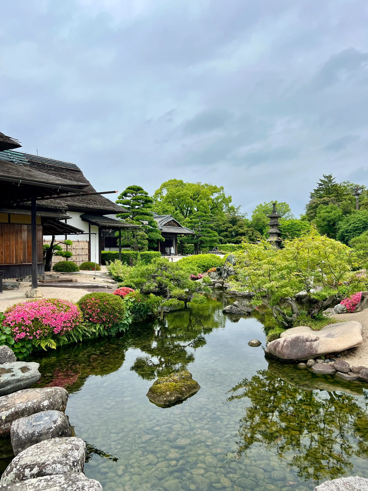

קצת עלינו - אנחנו זוג תרמילאים שהגיע ליפן בסוף אפריל מיד עם סוף פריחת הדובדבן, לא התקמצנו או חסכנו אז כנראה שגם אם אתם לא תרמילאים תוכלו להיעזר באתר הזה. המון אנשים פנו אלינו לקבל מידע על יפן אז החלטנו לאגד את הכל ולהפיץ כדי שכולם יוכלו להיעזר במידע ובחוויה שלנו.

בין אם אתם חולמים לטייל בין ערי המטרופולין המודרניות, לטבול ביופי הטבע של האלפים היפניים, או ליהנות מחוויות תרבות ייחודיות – יפן מציעה אינסוף אפשרויות. בחרנו עבורכם את ההמלצות המובילות, מחולקות לפי קטגוריות שיעזרו לכם לבנות את הטיול המושלם. לחצו על אחת מתתי הקטגוריות למטה כדי להתחיל לחקור את היעדים שתרצו לגלות